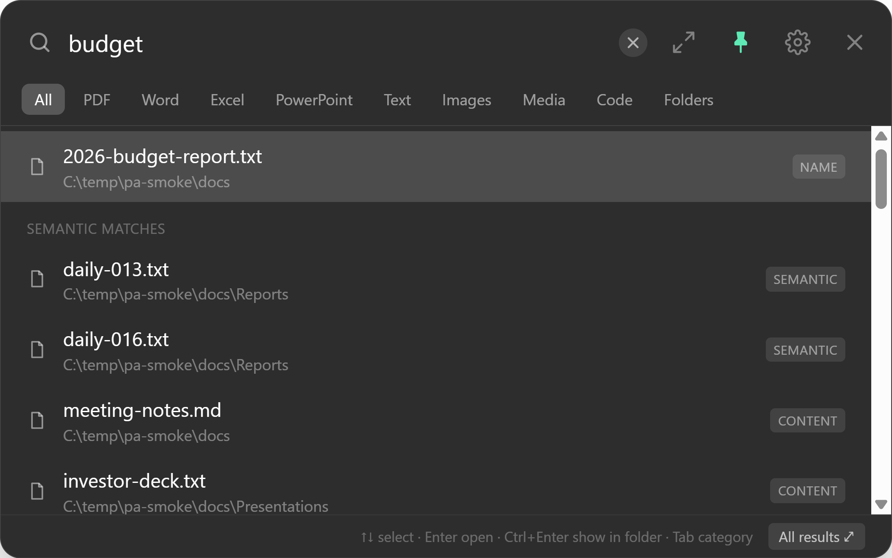
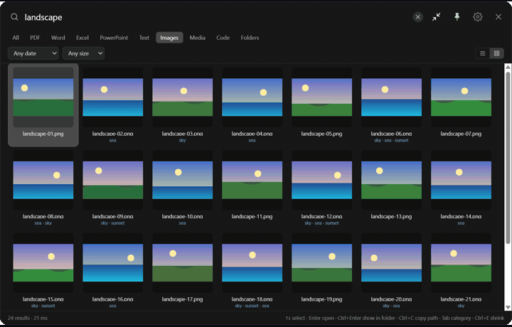
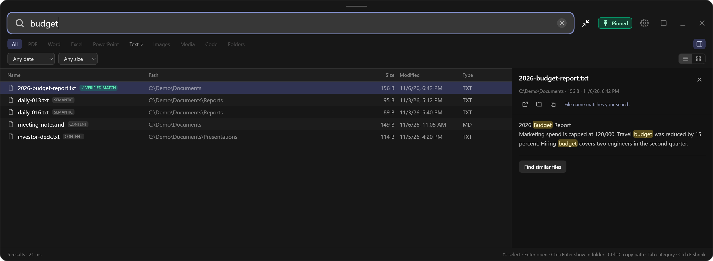
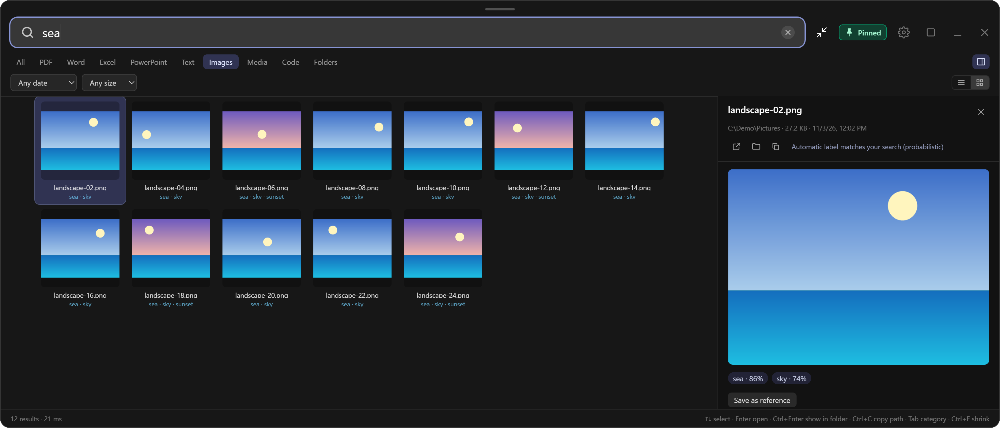

"I saved it right here…"
The document you need in ten minutes. You remember what it says, not what you called it.
Offline file search for Windows
That contract. That summer photo. The recipe someone special sent you. Omniff finds files by what's inside them, in seconds and privately. It is free while we launch.
Get your free key See it in action
Free while we launch · your personal license key arrives by email · no subscription · every feature

Sound familiar?
Everyone has a moment like these. They all end the same way: scrolling through folders you don't recognise anymore.
The document you need in ten minutes. You remember what it says, not what you called it.
Hundreds named IMG_4821. You remember the sea, the light, the smile. Omniff understands what pictures show.
Somewhere in a scanned PDF. Type a number from it and you're there.
Years of work and memories you haven't opened in a decade. Add it in one click and rediscover what's on it.
Now imagine typing a few words you remember, and it's just there.
*Measured on the developer's test PC; results vary with hardware.
An animated example of how Omniff behaves. A real recording follows.

A real screen recording with demo data: first a content search, then a "landscape" image search and the large-icon view.
No more opening folder after folder. One shortcut, a few words, done.
The quiet confidence that nothing you've saved is lost. If it's on this PC, you can find it.
Your files, your drive, your index. Nothing leaves your computer, and nothing is ever changed.
PDF, Word, Excel, PowerPoint, OpenDocument, RTF, HTML, EPUB, text and code files. Scanned PDFs are read with Windows' built-in OCR (needs a Windows OCR language pack).
Automatic labels, a "Large icons" view like Explorer, and queries like "sunset" or "dog".
File names are searchable within seconds of adding a folder. Newly saved files appear in about three seconds.
Switch categories with Tab. A sortable, filterable results table with Name, Path, Size, Date and Type.
Your words are highlighted inside the matching text, photos open as a large preview with their labels, and a result is marked "Verified match" only when Omniff has actually checked the file.
Resize it in any direction, fill the screen, pin it open while you work, or send it to the taskbar. It remembers your size.
The interface, name search, content search and AI search are made and tested for English and Turkish, including Turkish letters (ı, İ, ğ, ş…) and word endings. We only list languages we have verified end to end; other languages may partly work but are not promised.
No cap on the number of files or folders. Add drives and USB sticks in one click; each keeps its own index.
Scanning is throttled while you work; AI analysis runs only when the PC is idle and plugged in.
Open everything in one sortable, filterable table: by date, size, folder or type. Select several, copy paths, show files in their folder. It never deletes, moves or renames anything.


Every picture is analysed on your PC by a local AI model and tagged ("sea", "sunset", "car"…). Phone photos are read the right way up, and labelled pictures rise to the top when you search.
Labels and visual search are probabilistic and can be wrong or incomplete. When nothing matches well, Omniff shows nothing rather than guessing. File-name and word searches are exact matches.
Click Get your free key, enter your email, and you receive the download link and your personal license key. Run the installer and paste the key once when Omniff first opens.
Documents, Desktop, Pictures or any drive or USB stick, in one click. File names are ready in seconds; content and image analysis finish while your computer is idle.
The shortcut is yours to change. Open a result, or show it in its folder.
Omniff is new and the installer is not yet digitally signed, so Windows SmartScreen may warn about an unrecognised app. If you downloaded it from this page, click More info, then Run anyway. We would rather tell you than hide it. You can review exactly what the app sends over the network in Settings → About → Network ledger.
The price
Omniff for Windows
Free
launch period · no limit on files or folders · every feature
Omniff is built and supported by one independent developer, not a company. Before setting a price we want to learn what people actually find useful, and what they don't. Your honest feedback is the payment we are asking for.
A paid version may follow. If it does, we will say so on this page and in the app before anything changes, and the price and terms will be shown before you pay anything. There is no subscription and no account.
Your license key is free and personal. Each key can be activated on up to 3 computers (a reinstall counts as an activation); write to us if you run out.
Your documents, family photos and private papers deserve better than being uploaded somewhere. The AI models ship inside the app and run locally. Your files, file names and searches are never sent anywhere. There is no telemetry, no advertising and no account. Omniff only reads your files; it never modifies, deletes or moves them.
Check it yourself: turn your internet connection off. Searching works exactly the same. The only time Omniff goes online is once, when you press Activate to check your free license key (it sends the key, nothing else). Settings → About → Network ledger lists every connection the app itself has made.
Read the privacy notice →No catch. It is made and supported by one independent developer and runs entirely on your PC, so there are no servers to pay for. We are free while we launch to learn what people find useful. A paid version may follow; we would announce it first. Same app, no feature locked behind a plan.
The key lets us count how many people actually install the app, and keeps one download from being passed around endlessly. Our key provider (Gumroad) asks for your email address to send it. We use that address to help you with your key and, only if you agree, to tell you about important updates. We never sell it.
The design goal is to be unnoticeable: while you work, scanning is capped at about 15% of one CPU core, and AI analysis runs only when the computer is idle and plugged in. These figures are measurements on the developer's test PC; results vary with hardware.
Only once, to activate your free key. Everyday use is fully offline. Activation sends your license key to our license provider and nothing else; no file names, contents or searches are ever sent. (If Microsoft WebView2 is missing on Windows, the installer may download it from Microsoft; Windows 11 already includes it.)
Not necessarily. During the launch period it is free. If we introduce a paid version we will announce it on this page and in the app, show the price and terms before you pay, and never charge anything without your clear action.
The installer is not yet digitally signed, so Windows SmartScreen can show "Windows protected your PC" for a new app. Click More info then Run anyway if you downloaded it from this page. Code signing is on our list; until then you can review the app's only network activity in Settings → About → Network ledger.
No. The app only reads files. It has no delete, move or rename feature, and it opens a file or shows it in its folder only when you ask.
File names usually become searchable within seconds to minutes. Content and image analysis can take longer depending on how many files you have and how much idle time your PC gets. You can keep using the app meanwhile.
English and Turkish are fully supported and tested: interface, name search, content search and AI search. Other languages may partly work (file names are matched in any language) but we do not promise full quality. Content is read from PDF (including scanned ones, which need a Windows OCR language pack), Word, Excel, PowerPoint, OpenDocument, RTF, HTML, EPUB and text/code files.
Each key can be activated up to 3 times; a reinstall counts as an activation. New PC or ran out? Write to us and we will reset it. Details are in the license agreement.
Please don't. Each key is personal and limited to 3 activations; a widely shared key stops working. Friends can get their own free key on this page.
Write to omniff@proton.me with what happened, or use the feedback buttons in the app. Since it is free there is nothing to refund (see the refund policy); your files and index are never touched, and you can uninstall at any time.
Omniff is built and supported by an independent developer, not a company. Questions and bug reports go to omniff@proton.me.
Windows 10 or 11 (64-bit). About 250 MB for installation plus disk space for the search index (depends on your folders; you can choose where indexes are stored). An idle computer is recommended for AI analysis.
Stop searching. Start finding.
You'll enter your email on our key provider's page (Gumroad) to receive the download link and your key.